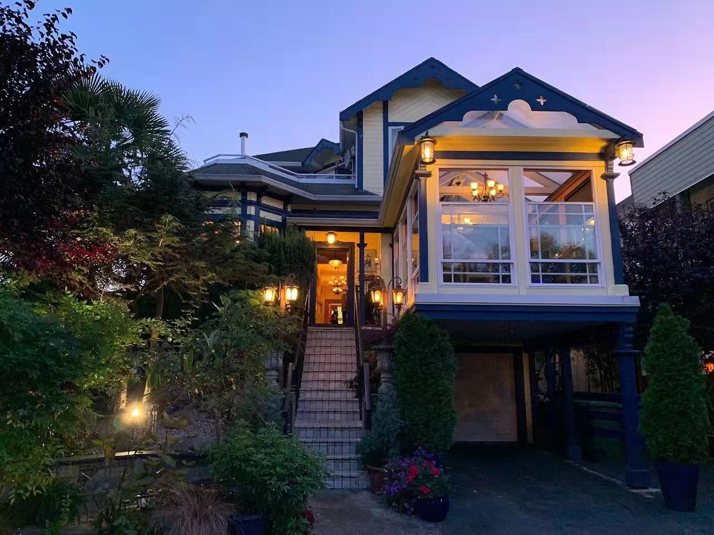

The View Oceanside Grilla(店名) casual fine dining restaurant located in downtown Nanaimo with tremendous views in beautiful Nanaimo. they offer new and old trends using local ingredients in a scratch kitchen. the bar contains some of the finest local beers and wines. dining room boasts a cozy, romantic setting with a view of downtown Nanaimo's harbor.
